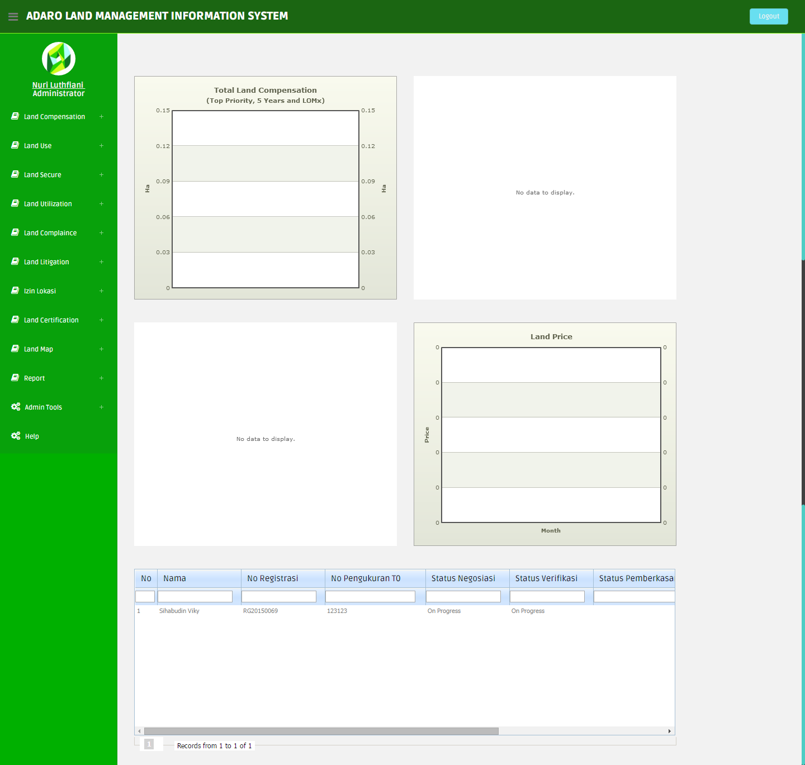
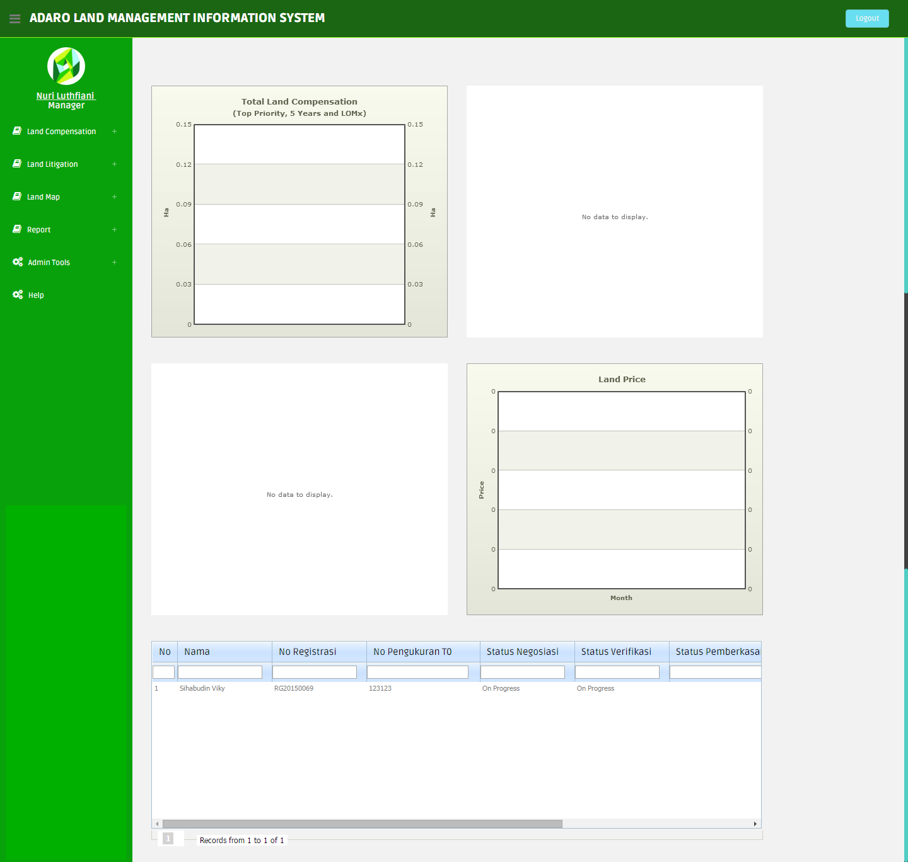
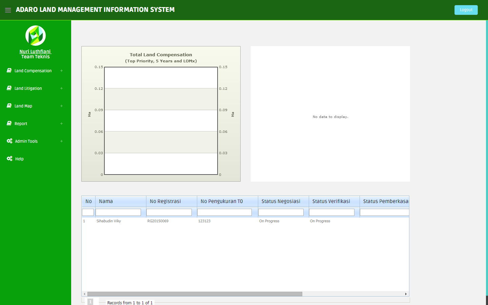
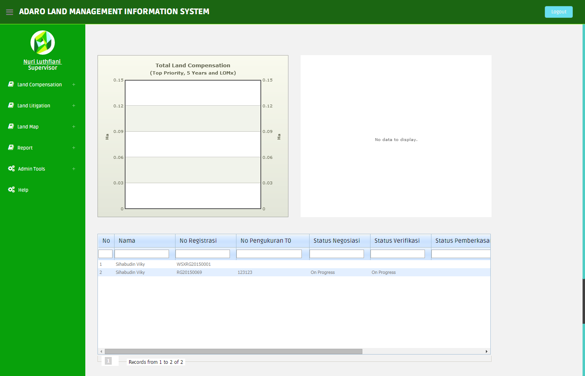
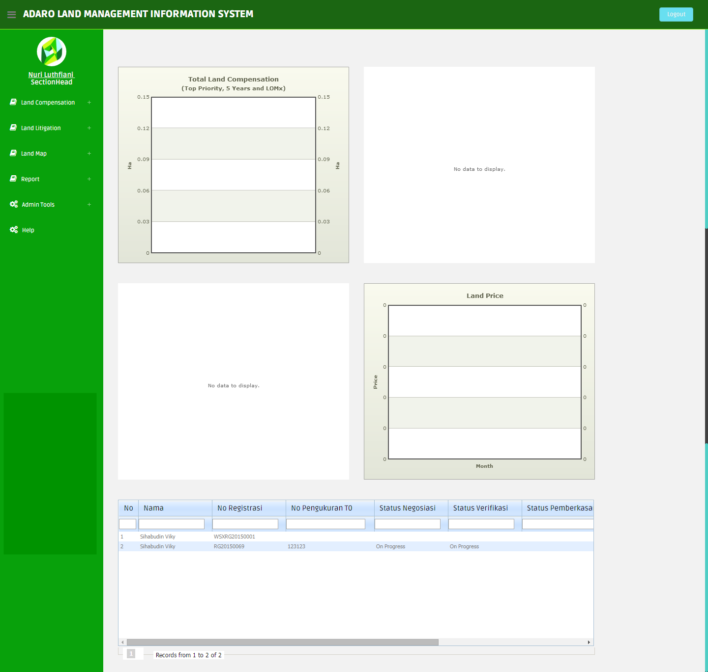
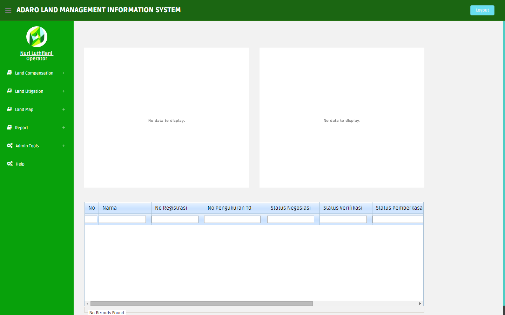

3. Halaman Utama
Halaman utama adalah halaman yang tampil setelah proses login selesai dan berhasil.
Pada aplikasi ini terdapat Hak Akses. Hak Akses merupakan
- Tampilan Menu Halaman Hak Akses Administrator

- Tampilan Menu Halaman Hak Akses Manager

- Tampilan Menu Halaman Hak Akses Team Leader
- Tampilan Menu Halaman Hak Akses Team Teknis

- Tampilan Menu Halaman Hak Akses Supervisor

- Tampilan Menu Halaman Hak Akses Section Head

- Tampilan Menu Halaman Hak Akses Operator

Halaman Utama berisi Menu- Menu Sebagai berikut:
- Land Compensation: adalah suatu modul mengenai pembebasan lahan yang mencakup modul pre registrasi, pengecekan lapangan, registrasi, verifikasi, pengukuran T0, negosiasi, pemberkasan, pembayaran, finalisasi, serah terima berkas.
- Land Use : adalah suatu modul mengenai pembebasan lahan mecakup Project, Status Registrasi, Tipe Registrasi, Asset, Progres Land Use.
- Land Secure : adalah suatu modul mengenai proses pengamanan lahan yang telah dibebaskan untuk dilakukan pemanfaatan lahan mencakup Tipe Pengalaman, Status Pengalaman, Aset
- Land Utilization : adalah modul mengenai pembebasan lahan mencakup Kelas Lahan.
- Land Complaince : adalah suatu modul mengenai tanah yang bersinggungan yang mencakup modul land compliance.
- Land Litigation : adalah sutu modul mengenai claim tanah yang telah bebas yang mencakup modul klaim user, persiapan dokumen, verifikasi dokumen dan legal.
- Izin Lokasi : adalah suatu modul mengenai proses izin lokasi tanah yang mencakup modul persiapan, proses pengurusan, proses izin lokasi dan pelaporan.
- Land Certification : adalah suatu modul mengenai sertifikat tanah yang mencakup modul proses land management, persiapan internal, tahap proses BPN, tahapan perolehan produk.
- Land Map : adalah suatu modul mengenai pemetaan lahan yang mencakup Map Adaro Indonesia, Map Balangan Coal, Map Mustika Indah Permai, Map Land Compensation.
- Report : adalah salah satu fungsi manajemen berupa penyampaian perkembangan atau hasil kegiatan yang telah dilakukan berbentuk Chart. Reporting tersebut bisa bertambah sesuai dengan kebutuhan masing – masing unit bisnis.
- Admin Tools : adalah suatu modul untuk memanage Master Identitas, User Management, Group Management, Master Menu, Master Codes, Master Perusahaan
- Help : adalah suatu modul yang berisi user manual penggunaan aplikasi Adaro Land Management Information System